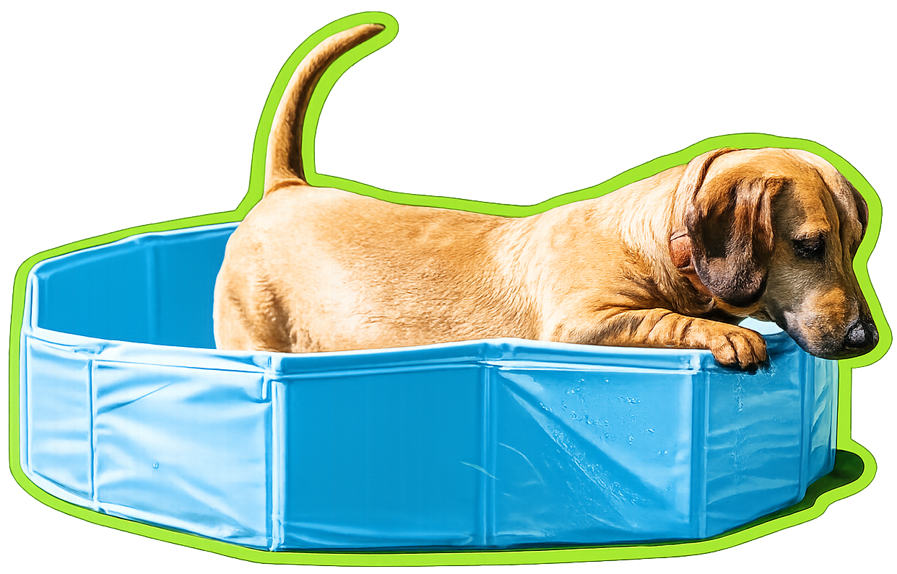

NIE RÓB TEGO!
→ Dla psa będzie lepiej jak nawet nie będziesz patrzeć w jego stronę. Jasne, są takie, które od razu chcą się przyjaźnić i wszędzie się z tobą dotykać. Ale są też psy lękowe, które potrzebują czasu. Jak się patrzysz i coś do nich gadasz, wycmokujesz i niuniaś, a nie daj Boże!, SCHYLASZ SIĘ! czują się zagrożone.
JEŚLI NAPRAWDĘ, naprawdę lubisz psy,
To się do nich nie odzywaj.
Wyobraź sobie jak cztery razy wyższe i dwa razy szersze wyłysiałe zwierzę zbliża się do ciebie. Wydaje niezrozumiałe dźwięki ciam ciamcmok łiii!cmom ciamgluutciam - jest coraz bliżej i bliżej - ciom ciom ciuciu cmok łiii!... To jasne, jak możesz to spierdalasz. Ale jak jesteś na krótkim sznurku, masz problem!
Gdy psy się boją, uciekają, a gdy nie mogą uciec, szczekają. Dopiero jak naprawdę muszą, atakują.
NIE TUPAJ, GAMONIU!
Nie krzycz, nie sycz, nie warcz (a zdzwić się można co ludzie wymyślają!), nie odszczekuj, nie podnoś ręki, nie udawaj, że atakujesz (ojezuśku, co za pomysł!).
🌸 JESTEŚ OAZĄ SPOKOJU 🌸
Bo podobno człowiek to najmądrzejsze zwierzę. A mądry przecież, gdy istota się boi, spokojem ją najprędzej uspokoi, prawda?
I nie mów miłym tonem, dla złagodzenia sytuacji. Po prostu przestań. Stój normlanie, ziewnij sobie*.
…ale ja przecież nic nie robię, MAM TYLKO WIELKI, CIĘŻKI KWADRATOWY PLECAK, KTÓRY MÓGŁBY ZABIĆ,
a potem wsiadam na swój skuter motocylk brum brum jupii, z piskiem opon, ale jestem fajny, ja cię kręcę!
→ Tymczasem pies: słyszy dźwięki o większych częstotliwościach niż my, ma znacznie czulszy słuch. Dźwięk skutera jest dla niego ostry i pszeszywający.
Wyobraź sobie, że jesteś psem z miasta i każdego dnia kilka razy nie wiadomo kiedy, nie wiadomo skąd ktoś wali talerzami obok twojej głowy. Przyznaj, że taki dzień może być trochę stresujący.
I się dziwić, że szczeka. Najświętszy by się wydarł.